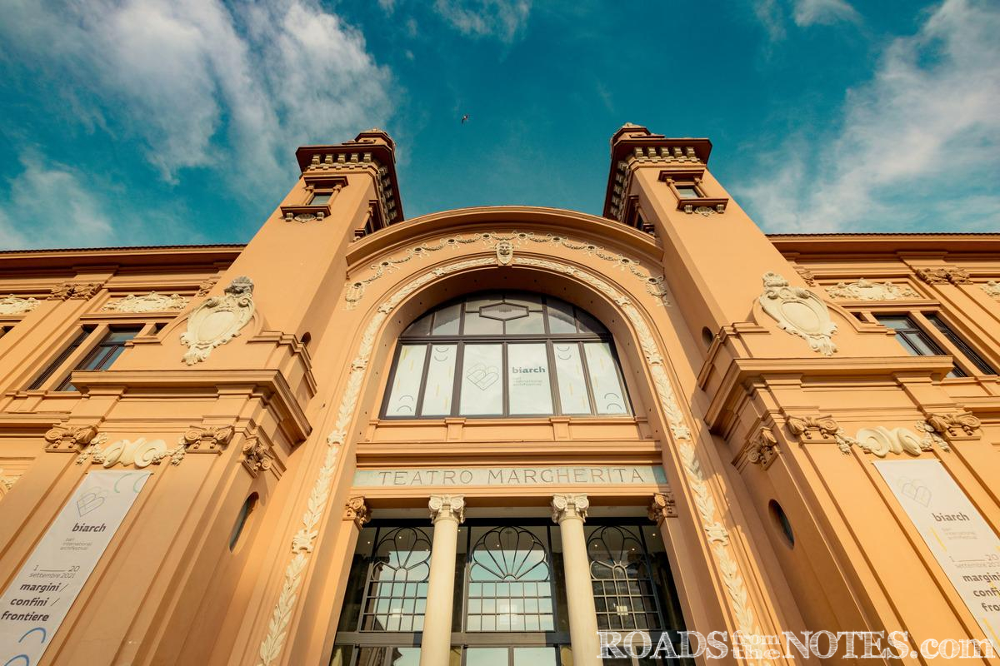

БАРИ - ИТАЛИЯ
"Senatus Populusque Romanus"

- Забележителности:
- В Стария град
- В Новия град
- Туристически забележителности близо до града
1. Театър Петруцели (Teatro Petruzzelli): Това е един от най-големите оперни театри в Италия и е символ на града Бари. Сградата е впечатляваща със своята неокласическа архитектура и богато декорирани интериори. Театърът предлага богат репертоар от оперни постановки, концерти и танцови изпълнения.
2. Регионален археологически музей (Museo Archeologico Regionale di Bari): Този музей е дом на богата колекция от археологически
 находки от региона Пулия. Можеш да видиш антични скулптури, мозайки, керамика и други
артефакти, които представят историята и културата на
региона.
находки от региона Пулия. Можеш да видиш антични скулптури, мозайки, керамика и други
артефакти, които представят историята и културата на
региона.3. Конгресен център Fiera del Levante: Това е голям конгресен и изложбен комплекс, който привлича посетители от цял свят. Тук се провеждат различни търговски изложби, конференции и събития. Сградата е също така интересна с архитектурата си и впечатляващите пространства.
4. Lungomare Nazario Sauro: Това е прекрасна морска алея, която се простира вдън по брега на Адриатическото море. Тук можеш да се разходиш, насладиш се на красиви гледки и ресторанти с изглед към морето. Това е идеално място за релаксация и разходки. 
5. Съдържателен център "Bari Vecchia": Това е съвременен културен комплекс, който промотира и подкрепя изкуството и културата в Бари. Тук можеш да откриеш изложби, концерти, театрални постановки и други събития, които отразяват богатството на съвременната културна сцена на града.
.jpg)